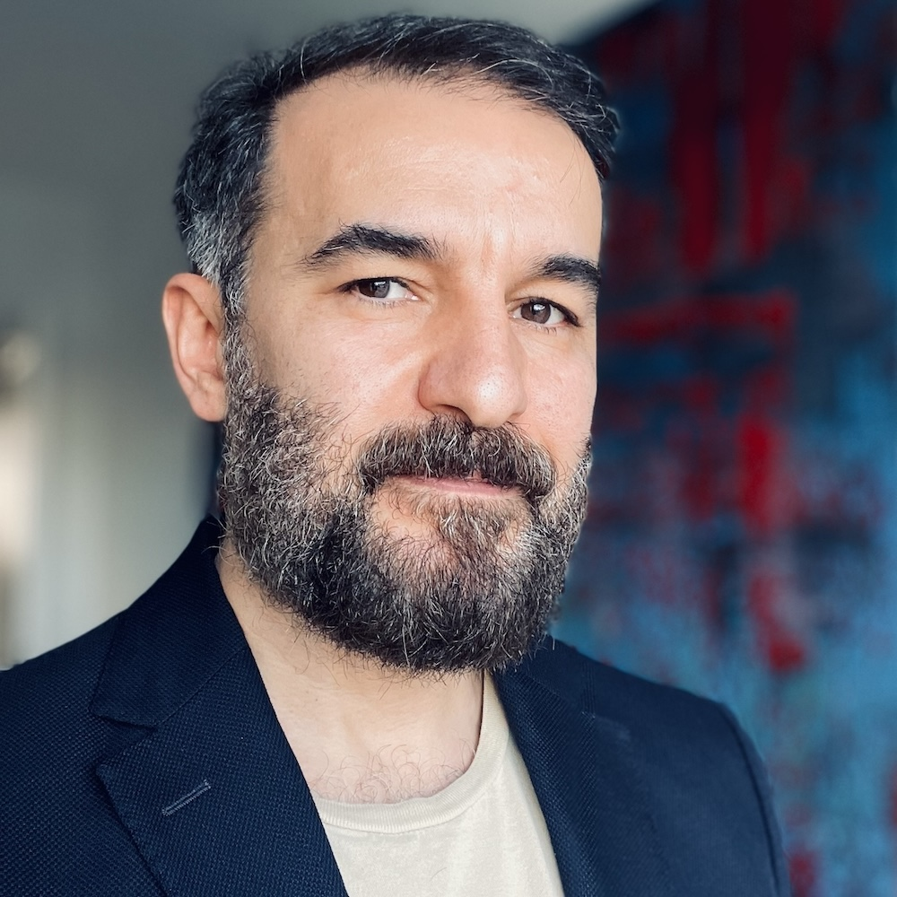
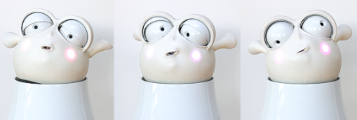
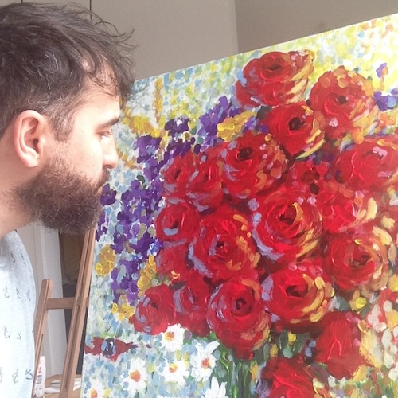
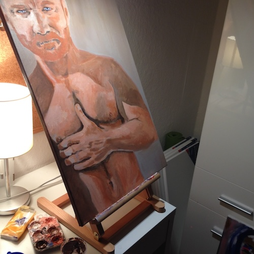

I am a German researcher and artist born in Turkey. I have studied Computer Science in Saarbrücken, Germany, and received a PhD end of 2014 from Salzburg University in Austria, conducting research at the interdiciplinary Center for HCI.
My research is often transdiciplinary and continues to revolve around two main areas: (i) improving HCI through the study and application of emerging technologies
and (ii) (emotional) AI development for human-centered design.
I consider my computing and design research as positive and constructive (and occasionally critical), aiming to test the current state of human-artefact relations in specific situations and to explore future (digital) alternatives.

02
Experience
Sempter 2024 -
Aalborg University, Denmark
Associate Professor
@ Human-Centered Computing Group, Department of Computer Science
January 2020 - May 2024
Huawei Technologies, Germany
Senior HCI Research Scientist, Lead HCI Research Team
@ Device Software Lab, Munich Research Center, Consumer Business Group
Research Focus: Improving HCI with Affective Computing (Machine Learning for emotional HCI), Consumer Device Use Cases
July 2015 - December 2020
Augsburg University, Germany
Postdoc/Akademischer Rat a.Z. (~ Assistant Professor)
@ Human-Centered AI Lab, Department of Computer Science,
Research Focus: Improving HCI with Multimodal Interaction Design and Positive/Affective Computing, HRI and Mental Health Use Cases
September 2010 - June 2015
Salzburg University, Austria
Researcher, Postdoc, Project Lead, Co-Lead "Embodied Interaction Design" team
@ Embodied Interaction Design Team, Center for HCI
Research Focus: Improving HCI with Human-Centered Interaction Design and Contextual Interfaces; Smart Home, Factory, and Automotive Use Cases
March 2007 - August 2010
Fraunhofer ESK, Munich, Germany
Researcher, Interaction Designer & Project Lead
@ Mobile Applications Group, Enterprise Communication
Research Focus: Improving Mobile HCI with Multimodal Interaction Design and Contextual Interfaces, SME Use Cases
October 2004 - February 2007
DFKI (German Research Center for AI), Saarbrücken, Germany
Researcher, Interaction Designer
@ Intelligent User Interfaces Department
Research Focus: Improving Mobile HCI with Multimodal & Multilingual Interaction Design and Contextual Interfaces, Travel/Touristic Assistance Use Cases
1998 - Oktober 2004
Part-time jobs
Perl/C/VC++ Programmer, Tutor/TA for CS Lectures, AI-lab Research Asssistant
@ Saarland University & DFKI spin-offs, Germany
03
Research
My early research was greatly influenced by visionaries such as Mark Weiser and his concept of
Ubiquitous Computing, as well as Paul Dourish's insightful book "Where the Action Is: The
Foundation of Embodied Interaction," and Löwgren and Stolterman's "Thoughtful Interaction
Design: A Design Perspective on Information Technology."
As my interests evolved, I turned my attention to designing multimodal interactions for the well-
being of individuals and enhancing human potential. Calvo and Peter's work on "Positive
Computing" served as a significant source of inspiration during this phase.To better comprehend the
profound connection between our bodies and our experiences in relation to the environment, I
began drawing inspiration from diverse disciplines and fields. Notably, Shusterman's philosophical
work on Somaesthetics and Hartmud Rosa's social work on "Resonance Theory" provided valuable
insights that shaped my human-centered approach to designing emerging technologies.
My main research is about improving HCI through the study and application of emerging technologies,
and one class of important emerging technologies has been machine learning solutions. ML is enabling a new wave of human-centered user interface and experience designs. To this end, I have been studying the realm of highly perceptive, interactive, and emotional AI
development.
"Recent" research publication highlights
Recent publications worth mentioning are the IUI 2022 paper titled "Robust and Deployable Gesture Recognition for Smartwatches"
which was a result of a collaboration with Aalto University, where I have been the co-advisor of
Utkarsh Kunwar's graduate research (open pdf). The resulting paper is a good example
of research combining human centered design methods with state of the art AI techniques to create "usable/useful" smart technology.
An extended version of our paper titled "How to Compliment a Human - Designing Affective and
Well-being Promoting Conversational Things" has been accepted and apeared early 2024 in the journal for IxD & Architecture(s). The extended journal version is available here: (open pdf) or at the journal´s website https://ixdea.org/table-of-contents-n-58/).
The paper describes iterative human centered design research (including a month long exhibition in an architecture museum) to enable artifacts to generate meaningful and positive utterances (i.e. compliments) using machine learning based visual perception (Computer Vision). We also touch the topic of large language models and human-centered prompt engineering.
And most recently (spring, 2024) our submission titled "Audio Enhancement for Computer Audition – An Iterative Training Paradigm Using Sample Importance" to the international Journal of Computer Science and Technology has been accepted. The paper describes a novel ML training technique to achieve robustness in various (mostly HCI related) computer audition applications (e.g., emotion recognition, automatic speech recognition, audio scene analysis) which we evaluated in multiple experiments.
Here you can access the accepted preprint version of the submission (open pdf)
Kunwar, U., Borar, S., Berghofer, M., Kylmälä, J., Aslan, I., Leiva, A., & Oulasvirta, A. (2022). Robust and deployable gesture recognition for smartwatches. In Proceedings of 27th International Conference on Intelligent User Interfaces (pp. 277-291).open pdf
Aslan, I., Neu, D., Neupert, D., Grafberger, S., Weise, N., Pfeil, P., & Kuschewski, M. (2023). How to Compliment a Human – Designing Affective and Well-being Promoting Conversational Things. Interaction Design & Architecture(s) Journal (pp. 157-184). (https://doi.org/10.55612/s-5002-058-007) open pdf
Milling, M., Liu, S., Triantafyllopoulos, A., Aslan, I., & Schuller, B. (2024). Audio Enhancement for Computer Audition – An Iterative Training Paradigm Using Sample Importance. In Journal of Computer Science and Technology. open pdf (preprint version)
Award winning research
The following research papers have been nominated for best paper runner-up.
Two papers are about gestures (participative design of gestures, and a proof of concept for using mid-air gestures as a form of "biometric-behavioral" authentication),
and the other two are about using AI (interactive ML, and RL) for user behavior adaptive interactions (i.e., personalization of drink activity recognizers on a smartwatch, and adapting the behavior of robots)

Weber, K., Ritschel, H., Aslan, I., Lingenfelser, F., & André, E. (2018, October). How to shape the humor of a robot-social behavior adaptation based on reinforcement learning. In Proceedings of the 20th ACM international conference on multimodal interaction (pp. 154-162). open pdf
Aslan, I., Schmidt, T., Woehrle, J., Vogel, L., & André, E. (2018, October). Pen+ mid-air gestures: Eliciting contextual gestures. In Proceedings of the 20th ACM International Conference on Multimodal Interaction (pp. 135-144). open pdf
Flutura, S., Seiderer, A., Aslan, I., Dang, C. T., Schwarz, R., Schiller, D., & André, E. (2018, April). Drinkwatch: A mobile wellbeing application based on interactive and cooperative machine learning. In Proceedings of the 2018 International Conference on Digital Health (pp. 65-74). open pdf
Aslan, I., Uhl, A., Meschtscherjakov, A., & Tscheligi, M. (2014, November). Mid-air authentication gestures: An exploration of authentication based on palm and finger motions. In Proceedings of the 16th International Conference on Multimodal Interaction (pp. 311-318). open pdf
Joint Lab on Affective Computing
Affective Computing is simply put an extension of the field of HCI, making mainly use of (human-centered) Machine Learning
solutions to enable machines to recognize, express/mimic, or stimulate affective user contexts (e.g., emotional states).
From beginning of 2020 until mid 2023 I managed the Affective Computing and HCI Joint Innvovation Lab and all sub projects between Augsburg University and
Huawei, in the process co-advicing the research work of all the PhDs within the joint-lab projects:
"Smart Tutor" project, including research on recognizing and adapting to affective learner states, such as engagement and frustration (PhD researchers from Augsburg University: Alina Leidinger, Michael Dietz, Fabio Hellman, Anan Schütt)
"Emotional TTS" project, including research in Voice Conversion, Speech Emotion Recognition, and Text Emotion Recognition (PhD researchers from Augsburg University: Lukas Christ, Thobias Hübner, Zijiang Yang, Meishu Song, Shuo Liu)
"Audio Enhancement" project, mainly to enable robust Automatic Speech Recognition (PhD researchers from Augsburg University: Shuo Liu)
"Affective Multimodal Dataset" project, including reserach in Tool-support for semi-autonomously collecting and labelling Datasets (PhD researchers from Augsburg University: Meishu Song)
While managing the Machine Learning projects I had to follow the white AI rabbit, extending my expertise in
ML and AI trough the regular discourses with all the ML PhDs working on the projects.
I am thankful for everyone I worked with, including internal colleagues from Huawei who were located all around the world.
Academic Research Examples with Demo Videos
For the following (public) case studies the available video material provide deeper insights to my research activities, especially my human-centered and multimodal interaction design activites and the mixed-methodologies
that I typically use.
Tangible Heart Displays
Aslan, I., Seiderer, A., Dang, C. T., Rädler, S., & André, E. (2020, October). PiHearts: Resonating Experiences of Self and Others Enabled by a Tangible Somaesthetic Design. In Proceedings of the 2020 International Conference on Multimodal Interaction (pp. 433-441). open pdf
The paper was presented at ICMI 2020, which was due to Covid an online only event.
The positive is that there is short recording of my 8min presentation of the paper on youtube in which I also touch
on the theories which motivates the research and design decisions.
Human-Robot Interaction
Ritschel, H., Aslan, I., Sedlbauer, D., & André, E. Irony Man: Augmenting a Social Robot with the Ability to Use Irony in Multimodal Communication with Humans. Proc. of the 18th International Conference on Autonomous Agents and Multiagent Systems (AAMAS 2019). open pdf
Pre-touch Proxemics
Aslan, I., & André, E. (2017, November). Pre-touch proxemics: Moving the design space of touch targets from still graphics towards proxemic behaviors. In Proceedings of the 19th ACM International Conference on Multimodal Interaction (pp. 101-109). open pdf
Aslan, I., Krischkowsky, A., Meschtscherjakov, A., Wuchse, M., & Tscheligi, M. (2015, September). A leap for touch: proximity sensitive touch targets in cars. In Proceedings of the 7th International Conference on Automotive User Interfaces and Interactive Vehicular Applications (pp. 39-46). open pdf
Aslan, I., Kraus, J., & André, E. (2016, October). LeapArm-facilitating sensory spaces for mid-air gestural interaction. In Proceedings of the 9th Nordic Conference on Human-Computer Interaction (pp. 1-6). open pdf
IoT plants and implicit interaction design
Bittner, B., Aslan, I., Dang, C. T., & André, E. (2019, March). Of Smarthomes, IoT Plants, and Implicit Interaction Design. In Proceedings of the Thirteenth International Conference on Tangible, Embedded, and Embodied Interaction (pp. 145-154). open pdf
Digital Bookshelf
Moser, C., Aslan, I., Neureiter, K., Randelshofer, I., Sundstroem, P., & Tscheligi, M. (2018). Exploring intended and unintended uses of (e) books as design inspiration for ambient displays in the home. open pdf
Gaze interaction in Games
Maurer, B., Aslan, I., Wuchse, M., Neureiter, K., & Tscheligi, M. (2015, October). Gaze-based onlooker integration: exploring the in-between of active player and passive spectator in co-located gaming. In Proceedings of the 2015 Annual Symposium on Computer-Human Interaction in Play (pp. 163-173).
open pdf
04
Teaching
I was a lecturer both at
Augsburg University in Germany and Salzburg University in Austria.
Before, I have taken lead TA and TA roles in Saarbrücken, at Saarland University.
I was an advisor and mentor for multiple graduate students at Universties.
I have also taken the role of co-advicer and co-mentor from industry during my time at Fraunhofer and Huawei when students
have worked on their theses and internships with me. For example, at Huawei I have co-supervised the master theses of
Utkarsh Kunwar (which resulted in a IUI full paper in 2022
open pdf)
Moritz Berghofer (which resulted in a separate paper at the 7th International Workshop on Sensor-based Activity Recognition and Artificial Intelligence in 2022
open ACM link)
Muhammad Mehran Sunny (which resulted in a CHI 2011 workshop presentation/paper open ACM link)
In the past I have mainly taught HCI and IxD lectures but I am also able to teach AI and ML lectures, including introductory but also advanced lectures about generative ML, Affective Compuitng, Intelligent UIs, AI for embedded/wearable devices, Multimodal ML, ML for NLP and conversational UIs.
I am also comfortable programming and developing functional prototypes in various programming languages.
Teaching @ Augsburg University, Germany
Human-Computer Interaction
SS 2019, SS 2018, SS 2017, 2016
lecturer
Multimedia 1
2018/19, 2017/18, 2016/17
lecturer
Praktikum (Studio) Usability Engineering
2019, 2017, 2016
lecturer
Machine Learning and Innovative Interaction Technologies Seminar
2018/19
lecturer
Usability Engineering
2018/19, 2017/18, 2016/17, 2015/16
lecturer
Physical Computing
2017/18, 2016/17, 2015/16
lecturer
Teaching @ Paris-Lodron University Salzburg, Austria
User Interface Engineering
2015
lecturer
HCI: case studies
2014
lecturer
User Interface Design
2013/14
lecturer
Teaching @ Saarland University, Germany
Introduction to AI
2005/06
Lead TA
Semantic Web Technologies
2005
Lead TA
Data Structures and Algorithms
2000/01, 2001/02
TA
Computer Science 3 (Theoretical Computer Science)
2000/01, 2001/02
TA
Computer Science 2 (Intro to CS, System Architectures)
1999, 2000
TA
05
Art Gallery
My art compensates my research and design activities focussed on software/code, grounding me often to physical materials and crafting with my eyes, hands, and body.
I enjoy painting for my friends, or painting
self-portraits as a somaesthetic practice of self-reflection and expression.
I enjoy both painting on large and small canvases. On small canvases I prefer to paint portraits.
I enjoy expressing my feelings expreimenting with colors.
This art gallery shows a few samples of my paintings.


06
Education
End of 2014
PhD (Dr. techn.)
@ Center for HCI, Paris Lodron University, Salzburg, Austria
PhD thesis: "Interfacing Through Movement: An Integration of Context and
Movement-Based Interaction towards Embodied Interaction Design”.
Thesis grade: “sehr gut (1)”. (Supervisor: Prof. for HCI Dr. Manfred Tscheligi & Postdoc Dr. Alexander Meschtscherjakov)
End of 2004
Computer Science Diplom (Dipl. Inf.)
@ AI lab, Universität des Saarlandes, Saarbrücken, Germany
Diplom thesis: "The Bum Bag Navigator: A Configurable Mobile Multi-purpose
Navigation System for Pedestrians”.
Thesis grade: “sehr gut 1.3” (Supervisor: Prof. for AI Dr. Wolfgang Wahlster & Postdoc Dr. Antonio Krüger)